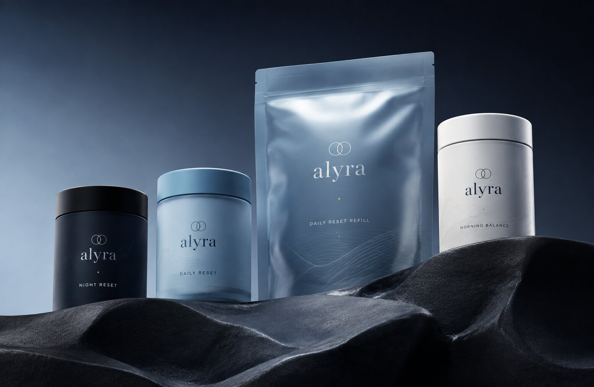
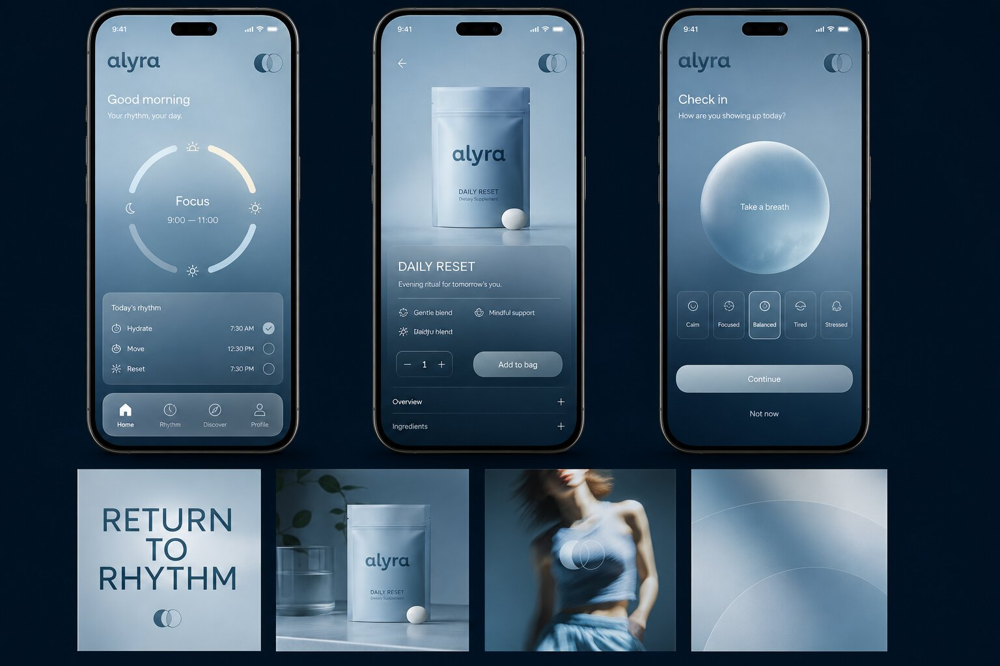
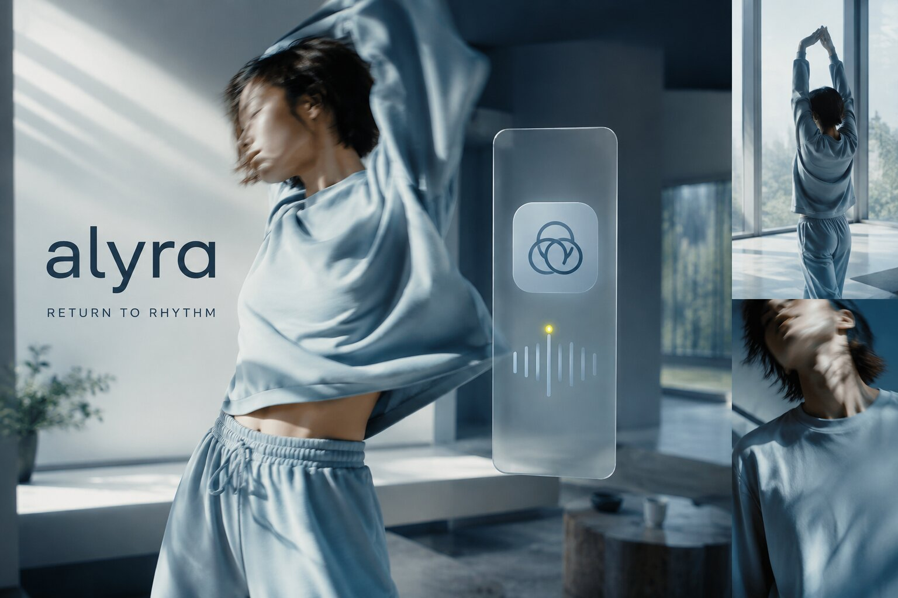
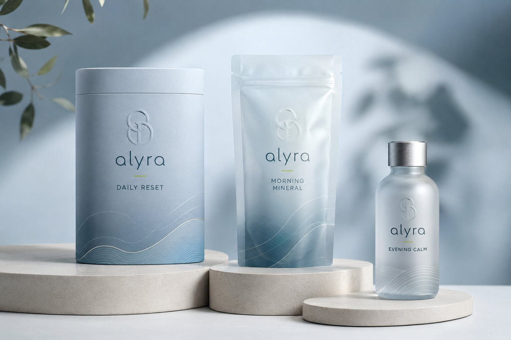
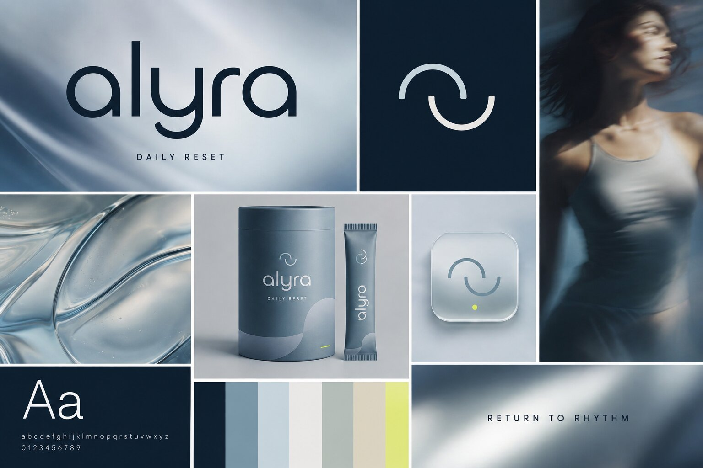
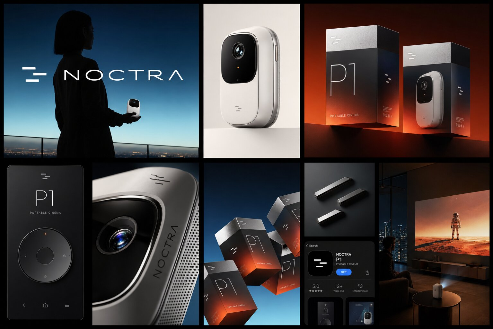

Three full-system packaging identities, each carried end-to-end from brand mark through retail box, campaign
photography, and — where the product calls for it — the app that lives alongside it. Design decisions get made
once, at the identity level, then get pushed all the way through to the shelf.
Bone-conduction running headphones, designed for people who need to hear the world, not block it out. The
identity commits to one move and repeats it everywhere: a single glowing ember-orange conduction arc against
charcoal, carried from the product itself down through the box art, so the packaging reads as a lit-up night
run before you've even opened it.
Campaign key artA night run through the underpass becomes the whole pitch in one frame: open-ear audio that keeps you tuned into the city, not sealed off from it.UnboxingFoam-cradled headphones, a magnetic charge cable, and a quick-start card — the unboxing trades sport-tech bravado for something closer to a watch box.Retail packagingMatte charcoal stock, one glowing conduction arc, five feature icons — it reads from three feet away on a shelf.Brand & materials sheetWordmark, colorway (Ember Orange, Icy Cyan, Safety Yellow), and material call-outs, next to the product itself, wet from a run.
02
Alyra
Return to Rhythm
Packaging Design · Brand Identity · App UI
A circadian-wellness brand built on one idea: your body already runs on a schedule, most supplement brands
just ignore it. The product line — Night Reset, Daily Reset, Morning Balance — is organized by time of day
rather than ingredient, and the identity was explored in two parallel material directions: a cooler,
app-driven navy system, and a warmer, spa-adjacent line in dusty blue with a gold-foil tideline.

Core rangeFour formats, one wordmark, and a single accent dot that shifts color with the time of day it's meant for.

Companion appA circadian dial on the home screen, a check-in ritual before bed — product cards that read like a spa menu, not a supplement shop.

Campaign hero"Return to Rhythm" pairs slow, blurred movement with a translucent device motif — the brand's real promise is calmer than a notification.

Alternate packaging directionA warmer system: a debossed interlocking mark, a hand-drawn gold tideline, stone plinths instead of a pharmacy shelf.

Style guideWordmark lockups, the ring mark, dusk-to-dawn palette, and the app icon distilled from the same wave motif.
A pocket projector positioned as precision hardware, not a gadget — the same reduced-mark, one-accent-color
language as the rest of this collection, pushed toward consumer electronics: anodized aluminum, laser-etched
detailing, and packaging shot like a flagship phone launch rather than a home-theater accessory.

Full system boardCampaign hero to app listing in one board — a silhouette against a fading skyline for the pitch, a studio shot of the unbroken shell, packaging fading from charcoal to ember, a remote that mirrors the product's own machined-dial language, macro shots of the laser-etched grille and anodized trim, and a living-room scene projecting a full-scale image off a device the size of a paperback.